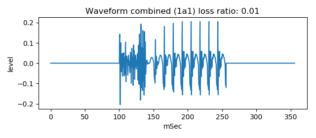

vocal tract tube noise model
This is an experiment to generate plosive voice /ga/ /ka/ sound by pseudo blast impulse, noise source instead of turbulent sound, and two tubes model.
usage
Generate following vowel sound, using two tubes model
python3 main2var_1a.py

Generate preceding noise sound, using perlin noise
python3 PerlinNoise.py

Generate pseudo blast impulse and mix with the noise sound
python3 mix_impulse.py

Apply resonance effect to the mixed sound
python3 main2noiseresona_ku.py

Combine preceding mixed sound and following vowel sound
python3 make_gka.py

This will save gka_1a1_noise0_i40_s800_resona_0.wav that sounds similar to voice /ga/ sound
and wii save gka_1a2_noise0_i40_s800_resona_0.wav that is small voiced feeling to near /ka/ sound
Generated sample
There are sample wav files of generated waveform in the generated_waveform folder.
Document
Please see related WEB Plosive voice /ga/ /ka/ sound waveform generation by pseudo blast impulse, noise source, and two tubes model or
same content in Japanese
License
MIT
Regarding to PerlinNoise.py, please follow the notice in the source code.